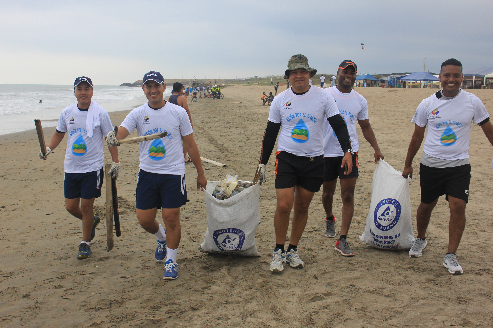
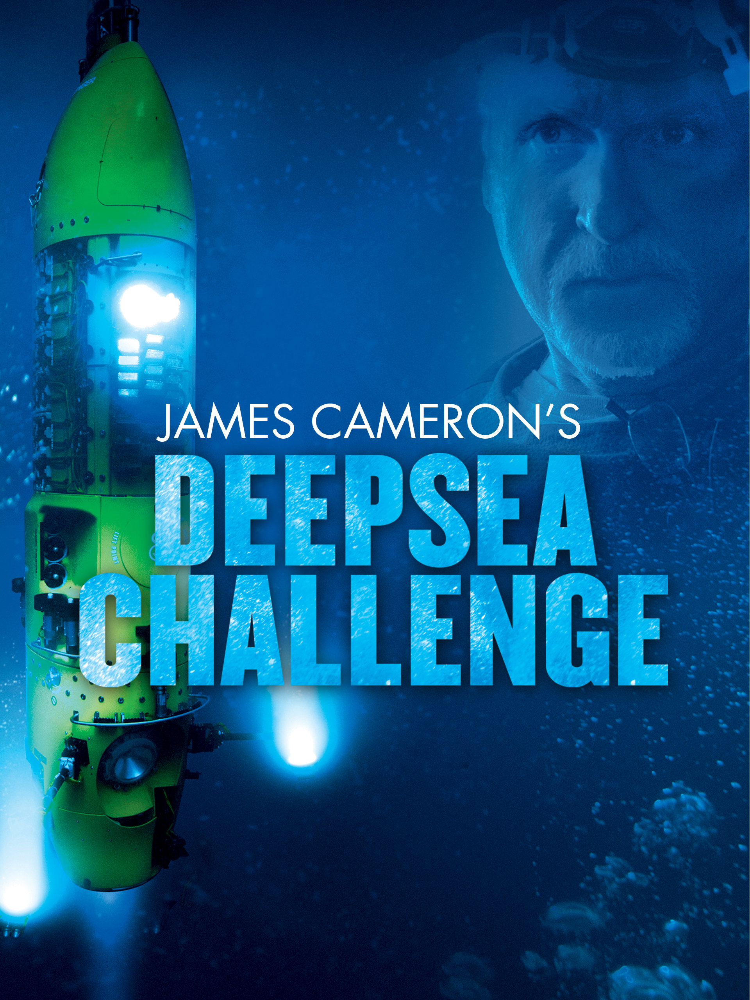

O que é a oceanografia? A oceanografia, também conhecida como oceanologia ou ciências marinhas, é o ramo das geociências que estuda os oceanos, desde os estuários (onde a água do rio se mistura com a água do mar) até o oceano profundo.
É uma ciência interdisciplinar que investiga os processos físicos, químicos, geológicos e biológicos dos oceanos e das zonas costeiras, seus limites e suas interações com a atmosfera, com os continentes e com a sociedade.
A conservação marinha, também conhecida como conservação oceânica, refere-se ao estudo de plantas marinhas, recursos animais e funções do ecossistema. É a proteção e preservação dos ecossistemas nos oceanos e mares através de manejo planejado, a fim de impedir a exploração desses recursos.
Principais grupos com foco na conservação marinha The Nature Conservancy (TNC):
Missão: A TNC é uma organização global dedicada à conservação da natureza, incluindo ecossistemas marinhos. Eles trabalham para proteger áreas costeiras, recifes de coral e habitats marinhos, além de promover práticas de pesca sustentável.
A TNC é uma das maiores organizações de conservação do mundo e tem um histórico sólido de sucesso na criação de áreas marinhas protegidas e na restauração de ecossistemas costeiros.
Ocean Conservancy:
Missão: A Ocean Conservancy concentra-se na proteção dos oceanos e na redução da poluição marinha. Eles lideram campanhas para combater a poluição por plásticos, preservar a vida marinha e apoiar práticas de pesca sustentável.
Esta organização tem sido fundamental na conscientização sobre a poluição por plásticos nos oceanos e na promoção de soluções para esse problema global.
Conservation International (CI):
Missão: A CI trabalha em todo o mundo para proteger a biodiversidade marinha e costeira. Eles estão envolvidos na criação de áreas marinhas protegidas e na promoção da gestão sustentável dos recursos oceânicos.
A CI tem parcerias com governos e comunidades locais para implementar estratégias de conservação eficazes, ajudando a proteger ecossistemas marinhos críticos.
 Grupo de protetores do mar.James Cameron é um renomado cineasta, produtor de cinema e explorador subaquático canadense. Ele é conhecido por dirigir e produzir filmes de grande sucesso, incluindo "O Exterminador do Futuro," "Aliens - O Resgate," "Titanic" e "Avatar." Além de sua carreira no cinema, James Cameron também é um entusiasta da exploração subaquática e tem desempenhado um papel significativo na exploração dos oceanos.
Deepsea Challenger: Em 2012, Cameron realizou a expedição Deepsea Challenger, mergulhando até a Fossa das Marianas, o ponto mais profundo dos oceanos, em uma cápsula submersível que ele mesmo projetou. Ele foi a primeira pessoa a atingir o fundo da Fossa das Marianas sozinho e capturou imagens e dados valiosos durante a expedição.
 Capa do documentário de James.